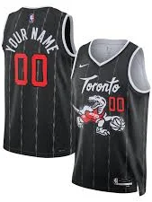
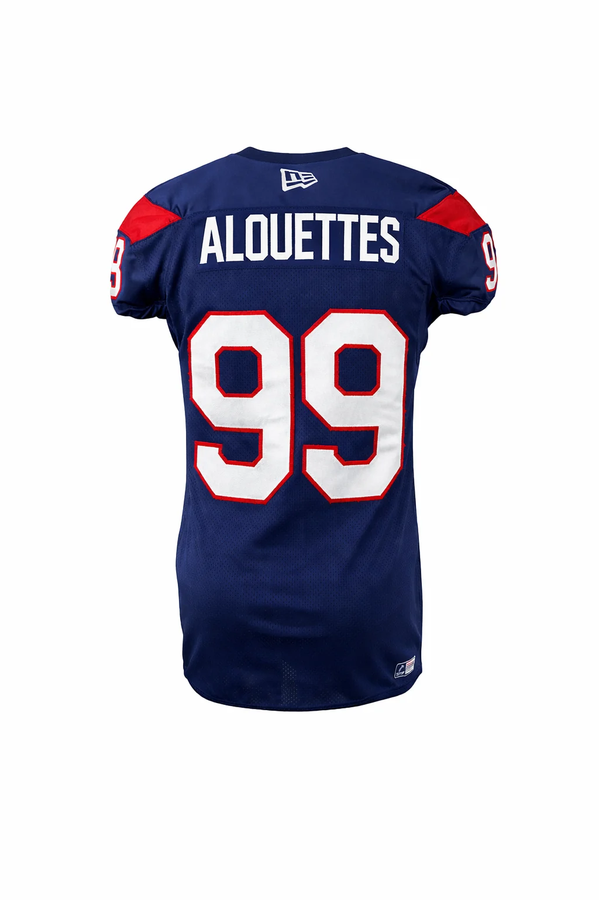

Maillot CF Montréal à l'extérieur
Maillot officiel de soccer du CF Montréal pour les matchs à l'extérieur.
Genre : Homme
Tailles : S, M, L, XL
29,99 $
Maillot officiel de soccer du CF Montréal pour les matchs à l'extérieur.
Genre : Homme
Tailles : S, M, L, XL
29,99 $

Maillot officiel de soccer du CF Montréal porté à domicile au stade Saputo.
Genre : Femme
Tailles : XS, S, M, L
31,99 $

Maillot NBA officiel des Raptors de Toronto en tissu respirant léger.
Genre : Homme
Tailles : S, M, L, XL, XXL
150,00 $

Édition spéciale à l'extérieur des Raptors de Toronto pour la saison régulière.
Genre : Enfant
Tailles : S, M, L
145,99 $

Maillot classique rouge des Alouettes de Montréal pour les matchs à domicile.
Genre : Homme
Tailles : M, L, XL
34,99 $

Maillot bleu marine officiel des Alouettes de Montréal pour les matchs à l'extérieur.
Genre : Femme
Tailles : S, M, L
34,99 $